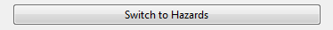

Accident and Hazard Mode
If accidents and Hazards were added, they can be linked to each other in the linking
view. While in accident mode, accidents can be selected from the big list in the middle of
the window to show all Hazards available for linking. By clicking on 
the big list in the middle can be used to select a Hazard in order to show all accidents
available for linking. You can switch between Hazard and accident mode anytime while
in linking view.
Linking Procedure
Linking Hazards to an accident will now be explained while in accident mode: Select an
accident from the big list in the middle. Now all Hazards available for linking are
presented in the list in the upper right part of the window. If Hazards have been linked
to the selected accident before, these are listed in the lower right part of the window.
The Buttons labeled with Add and Remove can be used to link and unlink Hazards to
accidents. Add All and Remove All can be used to link all available items or unlink all
linked items.